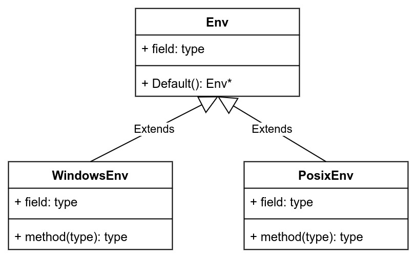

Ch09-LevelDB 之 Open
June 10, 2022
Open 流程
1. 接口定义 #
// include/leveldb/db.h
class LEVELDB_EXPORT DB {
static Status Open(const Options& options, const std::string& name, DB** dbptr);
}
// db/db_impl.h
Status DB::Open(const Options& options, const std::string& dbname, DB** dbptr) {}
2. Env 初始化 #

这里会根据操作系统选择初始化哪种 Env，不过应该注意点的是，代码中并没有这样的判断逻辑，这里的选择逻辑实际上实在 CMakeLists.txt 中完成的。
if (WIN32)
target_sources(leveldb PRIVATE "util/env_windows.cc" "util/windows_logger.h")
else (WIN32)
target_sources(leveldb PRIVATE "util/env_posix.cc" "util/posix_logger.h" )
endif (WIN32)
3. DB 初始化 #
- 初始化 DB 的各种属性，比如 Comparator，Memtable, ImMemtable 等；
- 加数据库锁，锁住整个数据库。
4. DB Recover #
- 如果数据库目录不存在，创建目录；
- 加文件锁，锁住整个数据库，因为 LevelDB 是单进程多线程的，必须保证只有一个进程打开数据库。
- 读取 MANIFEST 文件，恢复系统关闭时的元数据，也就是版本信息，或者新建 MAINFEST 文件；
- 根据版本信息，搜索数据库目录，找到关闭时没有写入到 SSTable 的日志，按日志写入顺序逐个恢复日志数据。
DBImpl::RecoverLogFile会创建一个 MemTable，开始读取日志信息，将日志的数据插入到 MemTable，并根据需要调用DBImpl::WriteLevel0Table将 MemTable 写入到 SSTable 中 - 创建数据库相关的内存数据结构，如 Version、VersionSet 等。
5. DB 初始化结束 #
- 释放数据库锁
- 返回指向新建的 DB 的指针（这里是通过参数的形式返回的）